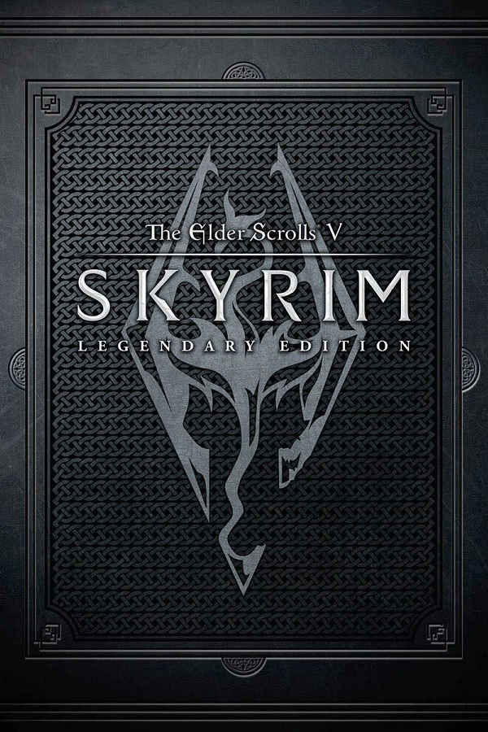
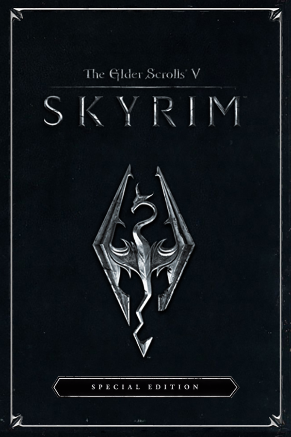
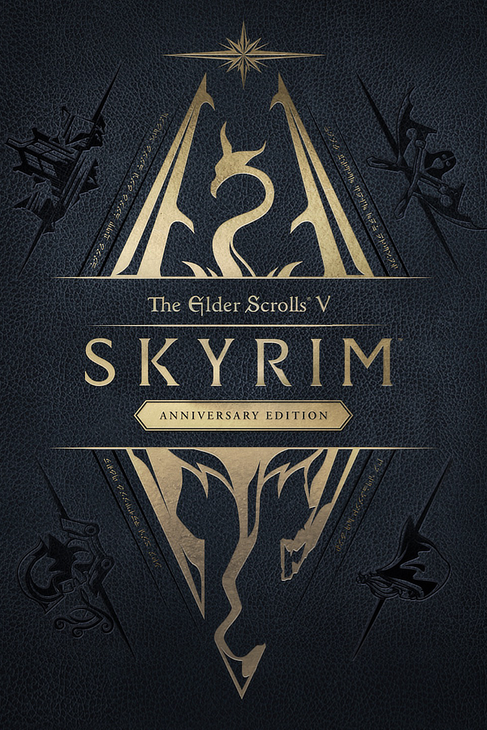
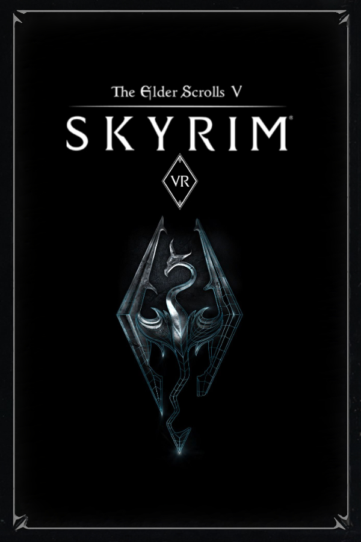

Skyrim Legendary Edition

Released in June 2013, the Skyrim Legendary Edition is a comprehensive package that includes the original game
along with all three official DLC expansions: Dawnguard, Hearthfire, and Dragonborn.
This edition also incorporates the latest patch at the time,
making it a more stable and feature-rich version compared to the initial release. Key features include:
- Dawnguard: Adds a vampire-themed questline with new locations, enemies, and abilities.
- Hearthfire: Allows players to build and customize their own homes.
- Dragonborn: Introduces the island of Solstheim, new quests, shouts, and abilities, including the ability to ride dragons.
Skyrim Special Edition

Released in October 2016, the Special Edition is a remastered version of the original game.
This edition brings several enhancements and improvements:
- Improved Graphics: Enhanced visuals including remastered art and effects, volumetric god rays, dynamic depth of field, and new water and snow shaders.
- All DLC Included: Dawnguard, Hearthfire, and Dragonborn are part of the package.
- Mod Support for Console: Includes support for mods on both PC and consoles (Xbox One and PlayStation 4), with Bethesda providing a streamlined way to download and install mods.
- Performance Enhancements: Upgraded engine from 32-bit to 64-bit for better performance and stability.
Skyrim Anniversary Edition

Released in November 2021 to commemorate the game's 10th anniversary, the Anniversary Edition builds upon the Special Edition with additional content and features:
- All Special Edition Content: Includes everything from the Special Edition (base game + DLCs + graphical improvements).
- Creation Club Content: Adds over 500 pieces of unique content from the Creation Club, including quests, dungeons, bosses, weapons, spells, and more.
- New Gameplay Modes: Introduces new gameplay mechanics like fishing, survival mode, and additional questlines.
Skyrim VR

Released in November 2017, Skyrim VR is a virtual reality version of the game designed for immersive gameplay using VR headsets. It offers:
- Full VR Experience: The entire base game and all three DLCs (Dawnguard, Hearthfire, Dragonborn) are playable in VR.
- Immersive Controls: Designed to work with VR motion controllers, allowing for more interactive gameplay, such as physically drawing a bow or swinging a sword.
- Platforms: Available on PlayStation VR and PC (compatible with various VR headsets like HTC Vive, Oculus Rift, and Valve Index).